V I D E O S
(33)
V I D E O S
(33)
OZONO cuenta con una
variedad de videos, desde registros de conciertos en
diferentes formatos,
con danza contemporánea y artes plásticas simultáneas, con
poesía insonora,
así como documentales sobre la
agrupación y como banda sonora en videos de terceros:
Enlaces de los
videos, por instrumentación:
(El enlace en el nombre de la pieza es para info,
partitura, discos, videos)
Solo
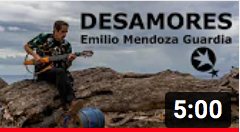
DESAMORES
-Timelapse Music Clip,
video de Tomek
Baczkowski de Emilio
tocando sólo en vivo en una casa vieja
y abandonada pero limpia, en Tenerife, destruida por el
tiempo. Se realizó una hora antes de partir al aeropuerto, de
la mano experta visual del polaco Tomek.
https://youtu.be/DquDK0cF54k
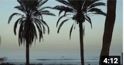
ESPERANZAS-2015, video de
Tomek Baczkowski de
Emilio sólo en vivo.
Emilio grabado parcialmente en un concierto en el
TwinFin Surf Camp, Tenerife, en la última noche que se
convierte en una hojeada al camp fabuloso de Nico Abad.
https://youtu.be/49nZwia29WQ
Dúos
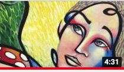
ESPIRALES
- Pedro y Emilio en el Complejo Cultural, San Antonio, al
final del acto de entrega de la Orden María Rivas a Emilio,
13-06-2021, por el Alcalde Josy Fernández y el Presidente del
Consejo Municipal de Los Salias, Edgar Laya.
https://youtu.be/BpaloDORgko
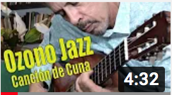
CANCIÓN DE CUNA - Por
TV Salias, ensayo de Juan y
Emilio en La Perla de la pieza Cuna en formación
https://youtu.be/CAptjOZTc_4
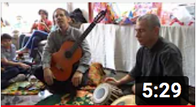
CANCIÓN DE CUNA - Por
Anjani Kumar, en el cumpleaños de Ávila, hija del Agregado Cultural de la Embajada de
la India, guitarra con tablã.
https://youtu.be/aMQcdVwtJEI
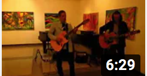
ENCANTO, ESPIRALES (frag) -
Expo de Amarillo Piña, Los Teques, Juan y Emilio
https://youtu.be/s5whU9JMr-A
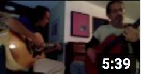
ESPERANZAS-2015 -
Ensayo de Juan y Emilio en La Perla, la primera vez que se
completa la canción de arriba a abajo.
https://youtu.be/Kw8rbybvP6A
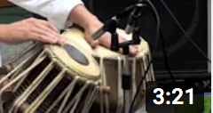
ESPIRALES - Concierto en la
Universidad Monteávila,
Caracas, guitarra con tablã
https://youtu.be/SSR3yrdADuk
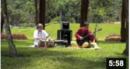
EVOLUCIÓN -
Concierto en el Laberinto Cromovegetal (Carlos Cruz-Diez),
USB, Caracas, guitarra con tablã
https://youtu.be/TsWhqPZtTsM

EVOLUCIÓN -
(fragmento) Concierto en Plaza Venezuela, Caracas, guitarra con tablã
https://youtu.be/YKZw1O4AzdY
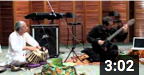
LABERINTO - Concierto
en la Universidad Monteávila, Caracas, guitarra con
tablã
https://youtu.be/QCKTEd8XwTM
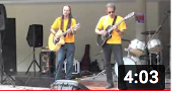
TERRUÑO - Concierto
de Protesta USB, Caracas, Juan y Emilio
https://youtu.be/CQ0qMo8_xQw
Tríos
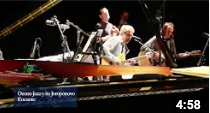
ENCANTO - Joroponovo arpeado - Video
de ESCINETV, Concierto AdM, Unearte, Emilio, guit 6; Juan,
guit 12; Lizardo, maracas
https://youtu.be/kt6R3g5Gzm8
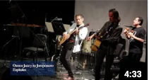
ESPIRALES - Joroponovo
bandoleado - Video de ESCINETV,
Concierto AdM, Unearte, Emilio,
guit 6; Juán, guit 12; Lizardo, maracas, con anuncio de la
solicitud enmienda de la constitución.
https://youtu.be/amZdaHGXQXM
Estas dos piezas arriba se pueden ver dentro del documental
completo del Concierto Homenaje a Alfredo del Mónaco,
realizado por Beatriz Bilbao y María Cristina Capriles por
parte de ESCINETV, en la Sala de Conciertos, Unearte, Caracas, el 17-07-2016.
Existen tres versiones de este documental de diferentes
duraciones:
4 min Trailer: https://youtu.be/o3YwNVFDNN0
45 min: https://youtu.be/zcKuam6FKe0
2h 15 min: https://youtu.be/W080cbAhWAU
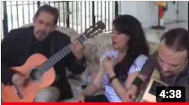
AGUACLARA - A
Musical Afternoon by Anjani Kumar, en la casa de la Embajadora de la India,
Country Club, Caracas, Emilio, Juan y Marcy
https://youtu.be/eUoFl6-nbJA
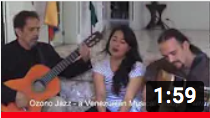
ESPIRALES - A
Musical Afternoon by Anjani Kumar, en la casa de la Embajadora de la India,
Country Club, Caracas. Emilio, Juan
y Marcy
https://youtu.be/JZw9lgqhdpo
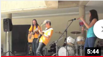
ESPIRALES
- Concierto de Protesta - USB, Caracas, Emilio y Juan, con
la aparición especial de María José Castejón, maracas.
https://youtu.be/OEndzPrbeZY
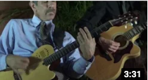
ESPIRALES
- Joroponovo bandoleado, boda de Emiliana y Alberto en Caracas, con Emilio, guit 6; Juan, guit 12; Lizardo,
maracas
https://youtu.be/7jCA6l_RoCI
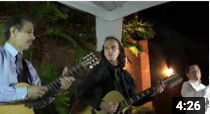
ENCANTO - Joroponovo
arpeado, boda de Emiliana y Alberto en Caracas, con Emilio, guit 6; Juan, guit 12; Lizardo, maracas
https://youtu.be/6-DKm4y8nqQ
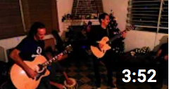
ENCANTO - En
casa de Emiliano, en San Antonio, Emilio,
guit 6; Juan, guit 12; Dha Maharaj, tablã
https://youtu.be/2XPM3BUilgk
Cuartetos
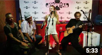
RESPLANDOR - Club
Jóspital, La Laguna, Tenerife, 23-11-2019, concierto sin
ensayo con Steve, Jenka y Marie, producción del TwinFin Surf
Camp, Nico Abad.
https://youtu.be/8dEQ5ESkzsI
Septetos

GUARAPICHE BLUES con María Rivas - Video de Jorge Gómez Plazola
y ESCINETV, con la grabación del disco homónimo.
https://youtu.be/9Kvu6oakxJk
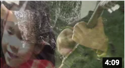
ESPIRALES - Video
de Carlos Eduardo Bertorelli, con la estrella bailarina de
Sara Angelina Conde Mendoza, de la grabación en el disco Natura,
https://youtu.be/z21tLTyfgiQ
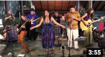
ESPIRALES - Hotel
Humboldt, ViveTV, toma de referencia fija de la producción del
Concierto Ozono Jazz en vivo en el Cerro del Ávila. A pesar de tener el audio
terminado, no se editó nunca el programa por parte de
Vive TV.
https://youtu.be/F01LrsCWPs0
Septetos
con Danza & Pintura
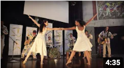
CANCIÓN DE CUNA - video
de Rancho Wladimir Pérez de Ozono con Danza por parte de
Nathalia Molina y Nayibe Berroterán, grabado en vivo.
https://youtu.be/IzYuAI2q1wc
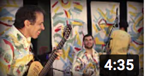
ENCANTO - video de
Rancho Wladimir Pérez de Ozono junto al artista plástico
Amarillo Piña, grabado todo en vivo.
https://youtu.be/aY0kgz2Ey8I
Con Poesía
Insonora
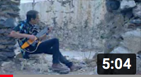
DESAMORES - El
video de Tomek con poesía insonora escrita de Andrea
Sucre
https://youtu.be/GXJNExXnDGw
Documentales
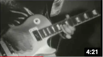
GIROS - Catálysis
1973, película de 16 mm muda, grabada por Pedro Galindo en
vivo en concierto de junio 1973, con la banda sonora de la
misma pieza pero grabada por la banda Akurima, 2005.
Primer solo grabado
de Emilio al estilo bandoleado.
https://youtu.be/gdOP7V2BMlk
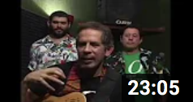
"Nuevo disco en construcción...", video de Nabor Sambrano para
FamiliaTV, "Rastros y Rostros", documental extenso con
entrevistas a todos los músicos, mientras asisten a un ensayo
en un estudio en Bello Monte, con un toque breve al final.
https://youtu.be/sKb7pwr90Xw
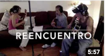
REENCUENTRO -
Inseparable amistad musical. Grabación casera en la última
noche de Emilio de su visita al apartamento nuevo de Zulay e
Ike, en Florida, EEUU, donde estrenan una primera versión de Añoranza con
cuatro y dos guitarras.
https://youtu.be/nUzClVQxoBQ
Banda sonora
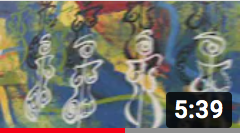
ESPIRALES y ENCANTO (frag.) en
trío en la Amarillo Piña Expo en C.C. El Recreo, Emilio, guit 6; Juan, guit
12; Lizardo, maracas
https://youtu.be/PPNicLsfDik
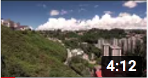
ESPIRALES - “Una
Visión de mi Entorno” de Mardonio Díaz, de la grabación en el
disco Natura, sobre
San Antonio de los Altos.
https://youtu.be/H0zmkzJKE-s
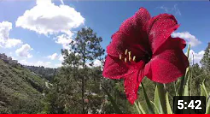
EVOLUCIÓN - “Una
Visión de mi Entorno 2” de Mardonio Díaz, de la grabación en el disco Natura, sobre San
Antonio de los Altos.
https://youtu.be/nkXRQIwIIW
{kind=link}